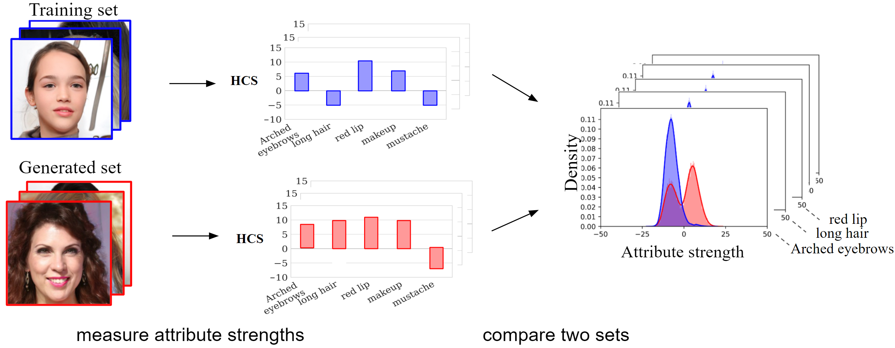
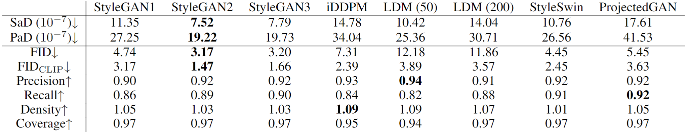
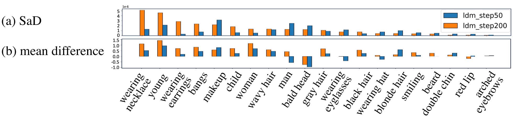
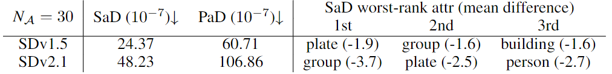

Attribute-Based Interpretable Metrics for Generative Models
arXiv 2023
Abstract
When the training dataset comprises a 1:1 proportion of dogs to cats, a generative model that produces 1:1 dogs and cats better resembles the training species distribution than another model with 3:1 dogs and cats. Can we capture this phenomenon using existing metrics? Unfortunately, we cannot, because these metrics do not provide any interpretability beyond "diversity". In this context, we propose a new evaluation protocol that measures the divergence of a set of generated images from the training set regarding the distribution of attribute strengths as follows.
Single-attribute Divergence (SaD) measures the divergence regarding PDFs of a single attribute. Paired-attribute Divergence (PaD) measures the divergence regarding joint PDFs of a pair of attributes. They provide which attributes the models struggle. For measuring the attribute strengths of an image, we propose Heterogeneous CLIPScore (HCS) which measures the cosine similarity between image and text vectors with heterogeneous initial points.
Our metric has interpretablity!
Our metric can tell you Model 2 is worse than Model 1 because it over-generates makeup, long hair, etc.
Figure 1 illustrates the evaluation metrics for two models with distinct properties. While Model 1’s generated images align closely with the training dataset, Model 2 exhibits a lack of diversity. Notably, in Figure 1a (gray box), Model 1 consistently outperforms Model 2 across all metrics. Yet, these metrics fall short in explicability; for example, they don’t highlight the overrepresentation of long hair and makeup in Model 2.
Addressing this gap, our paper proposes a methodology to quantify discrepancies between generated and training images, focusing on specific attributes. Figure 1b shows the concept of our alternative approach that measures the distribution of attribute strengths compared to the training set: while Model 1 offers a balanced attribute distribution akin to the training dataset, Model 2 overemphasizes long hair and underrepresents beard.
How does it works?

Figure 2 illustrates an overview of our metrics. We measure attribute strengths in all images in both two sets, and then calculate the divergence between two sets for each attributes.
We compare distribution of attribute strengths between two sets.
Single-attribute Divergence (SaD) measures how much a generative model deviates from the distribution of each attribute in the training data. Such as if we have a dataset with dogs and cats, and a generative model only makes dog images, it is not an ideal model because it does not produce cats at all.
Paired-attribute Divergence (PaD) measures how much a generative model breaks the relationship between attributes in the training data, such as "babies do not have beards."
Measuring attributes strengths.
To construct metrics that quantify the differences between two sets of images in an intelligible way, we introduce Heterogeneous CLIPScore (HCS), an advanced variant of CLIPScore. Unlike CLIPScore, HCS captures the similarity between two modalities—image and text—by setting distinct starting points for text and image vectors.

Figure 3 illustrates CLIPScore and Heterogeneous CLIPScore, (a) CLIPScore (CS) evaluates the similarity between
\(V^{CS}_{img}\) and \(V^{CS}_{Text}\) from the coordinate origin, where the angle between the two vectors
is bounded, resulting in a limited similarity value. (b) HCS gauges the similarity between
\(V^{HCS}_{img}\) and \(V^{HCS}_{Text}\) using the defined means of images \(C_\mathcal{X}\) and texts
\(C_\mathcal{A}\) as the origin, the range of similarity is unrestricted. (c) shows flexible values of
HCS compared to CS.
What did we uncover?
Comparing the performance of generative models. We computed each generative model's performance on our metric with their official pretrained checkpoints on FFHQ. We used 50,000 images for both GT and the generated set. We used USER attributes for this experiment.

Leveraging the superior sensitivity and discernment of our proposed metrics,
we evaluate the performance of GANs and Diffusion Models (DMs) in
Table above, the tendency of SaD and PaD
align with other existing metrics. However four notable points emerge;
-
ProjectedGAN [Sauer et al., 2021] lags in performance, having been criticized
[Kynkäänniemi et al., 2022] for not focusing on fidelity and only aiming to achieve a good FID score
by training to match the training set's embedding statistics. Even though it exhibits satisfactory results in traditional metrics,
it notably underperforms in SaD and especially PaD when evaluated by our measures. This indicates that mimicking the training set's embedding statistics directly
does not necessarily capture the correlation of attributes on the training set.
-
Diffusion models typically yield better quality with increased sampling timesteps. However, SaD and PaD scores for LDM(200 steps) surpass those of LDM(50 steps).

LDM with 50 steps v.s. LDM with 200 timesteps. With increased sampling timesteps,
(a) SaD of LDM gets worse,
(b) since making too many fine objects such as earrings or necklace.
necklaces and earrings.
This might elucidate the prevalence of attributes like young, makeup, woman, wavy hair. We posit that a dense sampling trajectory engenders more high-frequency objects.
-
Through a detailed analysis of SaD and PaD scores, we noticed divergent trends between the strengths and weaknesses of GANs and Diffusion models. To probe deeper,
we exploited the versatility of constructing attributes, examining score variations based on attribute characteristics. Specifically, we built attributes
focused on color (e.g.,
yellow fur, black fur) and on shape (e.g., pointy ears, long tail) within the LSUN Cat dataset.
-
Comparative analysis of StableDiffusion versions shows SDv1.5 has better attribute distribution than SDv2.1,
being almost twice as superior. (We generate 30k images using the caption of COCO. We use \( N_{\mathcal{A}}=30 \).)

Intriguingly, all SaD worst-rank attributes have negative mean differences (redundant),
indicating that SDs tend to omit certain objects such as group1 or
plate2. Particularly, SDv2.1 faces challenges in generating multiple people.
This concurs with common assertions about SDv2.1, even though it reports a better FID score. In certain instances, users have noted
SDv2.1's inferior performance compared to SDv1.53. More details are provided in
Appendix A.1.
1 e.g., A group of people is standing around a large clock. ↩
2 e.g., A table is set with two plates of food and a candle. ↩
3 For example, some users have reported SDv2.1's lower performance compared to SDv1.5 in a blog post
available at AssemblyAI Blog.
↩
For more detailed insights and contextual understanding of the findings,
we encourage reading the full
research paper.